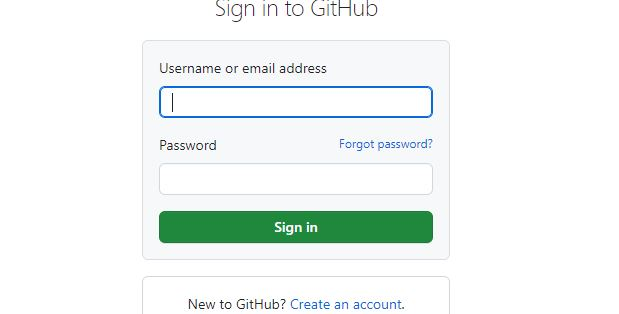
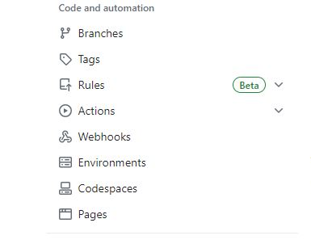
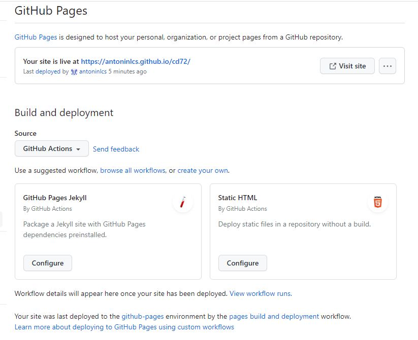
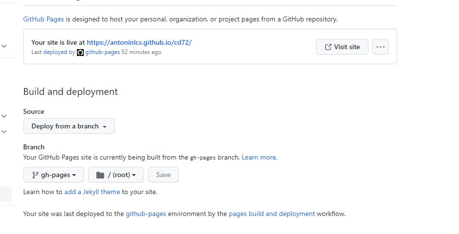
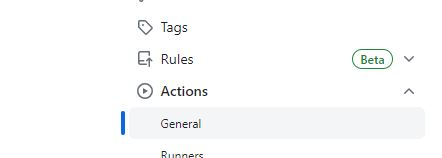
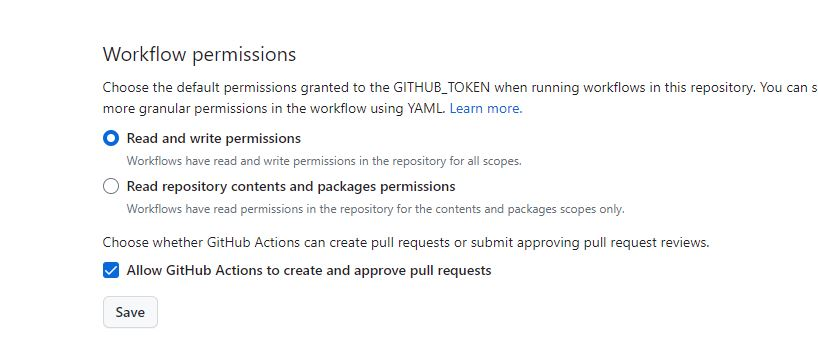

Création d'un dépôt GITHUB pour héberger mon Portfolio
Comment crée un dépot GITHUB
Tout d'abord il faudra vous rendre sur ce site : GITHUB
Il faudra vous connectez avec vos codes fourni aux préalables :

Une fois connecté il faudra Cliquer sur "new" en haut à droite de la page

Ensuite renseigner les informations suivante :

Voilà votre dépôt GITHUB créer !!
Activer la page web
Aller dans l'onglet "settings"
Puis aller dans l'onglet pages :

Vous devriez arriver sur cet onglet :

Création fichier "ci.yml"
Ce fichier est un script qui permet de construire et de déployer son site automatiquement
Pour ce faire :
mkdir .github
mkdir workflows
vim ci.yml
Ensuite il faudra inscrire ceci dans le fichier :
name: Deploy to GitHub Pages
on:
push:
branches:
- main
jobs:
deploy:
runs-on: ubuntu-latest
steps:
- name: Checkout repository
uses: actions/checkout@v2
- name: Set up Python
uses: actions/setup-python@v2
with:
python-version: 3.x
- name: Install dependencies
run: |
pip install mkdocs mkdocs-material mkdocs-mermaid2-plugin
- name: Build site
run: mkdocs build --verbose --clean
- name: Deploy to GitHub Pages
uses: peaceiris/actions-gh-pages@v3
with:
github_token: ${{ secrets.GITHUB_TOKEN }}
publish_dir: site
Attention
Il faudra penser à mettre le deploy dans la bonne branche
Pour ce faire aller dans "settings"
Puis aller sur l'onget "pages" :
Ensuite sélectionner github action
et vous allez mettre "Deploy from a branch" :

Attention
Il faudra penser à mettre les bons droits pour le workflows
Pour ce faire aller dans "settings"
Ensuite aller dans l'onglet "actions" :

Ensuite il faudra descendre jusqu'à trouver ceci :

Cocher les mêmes choses que moi !
Pensez à "save"
Voilà dépôt prêt à être utiliser !!!